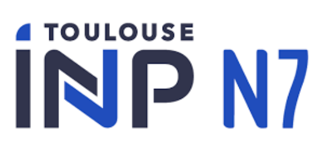
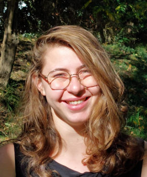
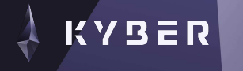
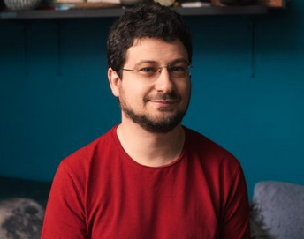
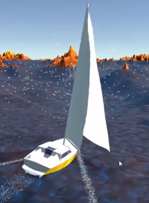
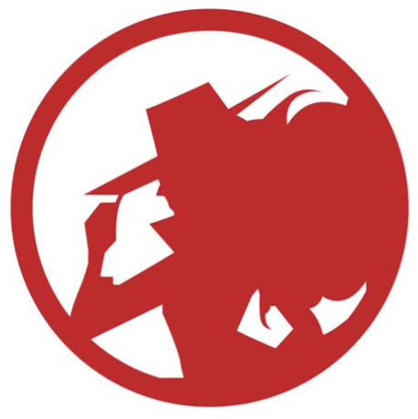

My engineering path is driven by a clear goal: innovating in Medical Embedded Devices (e.g., Insulin Pumps).
Starting with a strong foundation in Life Sciences, I pivoted to Math & CS to acquire the necessary technical tools. Today, as an apprentice at Kyber, I am mastering the final piece: Critical Real-Time Systems.
Engineering requires a curious mind.
Toulouse, France | 2024 - Present
Contributing to the "Next Gen Infrastructure for Real Time Interactions".
Professional Growth: Adapting to a fast-paced R&D environment, learning Rust from scratch, and collaborating on patents.
Toulouse, France | May - July 2025 (Forecasted)
Supervised by Hugues Cassé. Focus on embedded systems optimization and worst-case execution time analysis.
Marseille, France | June - July 2023
Validation of double license. Supervised by Benjamin Monmege.
Reflection: Gained deep understanding of state reduction algorithms and academic research methodology.

Building the "Next Gen Infrastructure for Real Time Interactions".
Led by Jean-Baptiste Kempf (CEO of Kyber & President of VideoLAN), this is his new ambitious venture to solve the latency problem once and for all.
► Watch Project Explanation (Video)Deep dive into the tech with JB Kempf.
We are creating a world where life-saving robot surgeries, drones, or immersive agents can be remotely operated with no delay. Our goal is to enable "Near-Human Latency" (< 50ms), allowing machines to feel like they are at your fingertips.
When controlling a machine, low latency is more important than video quality. Kyber delivers glass-to-glass latency down to 8ms. This enables true "Machine to Machine" interactions and AI agents controlling remote hardware.
A patented network protocol based on QUIC and WebTransport. The core is built upon VLC and FFmpeg open-source tech, utilizing Rust and WebAssembly (Wasm) for high-performance browser integration.
Context: Enabling local LLM interaction via Model Context Protocol.
Outcome: Successfully integrated a server allowing AI models to interact with local file systems.
Role: Designed the control system logic.
Outcome: Functional prototype capable of basic navigation and wind adjustment.
► Watch Demo VideoImplementation of the DPLL algorithm for boolean satisfiability problems.
Key Learning: Optimization of recursive algorithms and data structures in Java.
⚙ View Code on GitHubVulgarization of a scientific article on automata made of molecular logic gates. Published on EasyChair.
📄 Read Article (PDF)Want to see more?
📂 Link to my other projects on GitHubBuilding a strong mathematical and algorithmic foundation through a Double License in Math & CS (Aix-Marseille) and CPGE BCPST. Developed a passion for logical gates and automata theory.
Specializing in Networks and Telecommunications at ENSEEIHT to master sensor connectivity for medical devices (like insulin pumps). Simultaneously applying theory to real-time, low-latency challenges as an Apprentice at Kyber using Rust and QUIC.
Aspiring to become an expert in critical embedded systems and connected sensors. My goal is to contribute to the "Next Gen Infrastructure for Real Time Interactions" and design devices that significantly improve the daily lives of patients.
Professional Network: Active member of the ENSEEIHT Alumni Association and regular attendee of Toulouse Embedded Systems Meetups.

Roles: CTO of Scaleway, President of VideoLAN (VLC) and Kyber
Inspiration: Massive Open Source Impact: Leading the VideoLAN/VLC project, one of the world’s most successful open-source media players, demonstrating leadership in developing globally adopted, non-proprietary software.

Roles: Software and Systems Project Lead at Thales, CEO of Virevoile
Inspiration: His structural leadership and organizational rigor are paramount, showing that detailed framework planning is crucial for the resilience and successful advancement of complex projects. Furthermore, the creation of Virevoile—an Open Source project linking his passion for sailing with code and embedded engineering—is a strong model for transforming personal drive into tangible technical impact.

Recent exchange with a professional Red Team Operator (Ethical Hacking). I was captivated by the versatility of the role and the "perpetual enigma" involved in uncovering vulnerabilities.
Key Takeaway: This interaction highlighted the powerful link between mathematical logic and cybersecurity, reinforcing my drive to build resilient, safety-critical systems.
Targeting universities with strong Embedded Systems, Robotics, or Real-Time OS programs.
Country: Germany 🇩🇪
Program: Electronics and Automation (Code 0714).
Why: Elite technical university rivaling ETH. Located in the industrial hub of embedded systems (Siemens, BMW), ideal for critical systems & robotics.
Status: 🟢 Course compatibility checked
Country: Sweden 🇸🇪
Program: MSc in Embedded Systems.
Why: Specific focus on dependable systems and formal methods. Strong ties with industrial giants (Scania, Ericsson).
Status: 🟡 Analyzing prerequisites (GRE/GPA)
Location: Worldwide 🌍 (Flexible)
Actively seeking a technical internship of at least 9 weeks to validate my international mobility. My goal is to contribute to the Medical & HealthTech sector by applying my expertise in Embedded Systems and Safety-Critical Engineering.
👉 Hiring? My CV is available here.
Status: 🟢 Open to Opportunities
Engineering is not just about solving technical problems; it is about building a future that is inclusive and sustainable. In the medical field especially, ensuring algorithms are open, secure, and accessible is a matter of ethics and social justice.